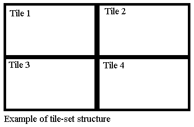

Eugene game development kit:
Programmer reference
Table of contents
Part 1. Welcome to
Eugene game development kit
Chapter 1.
Introduction
Introduction
Hello from Russia. My name is Popov Evgeniy Alekseyevich. I am the
individual programmer. I enjoy creating a software. I also like old–school
video games. Do you want to develop a video games for Microsoft Windows?
You need a good game engine for do it. I made my own engine. I hope that
my C++ game engine will be useful for many programmers.
Features
Let me show the engine features. Let’s go.
- Open source code.
- Easy to use object–orientated design.
- Very fast.
- Minimum external dependencies: Only DirectX, OPENGL and standard
Windows API libraries.
- Don’t need to link main program with engine binary file. The
engine is just source code files with all engine codes.
Installation
How you can install this engine? Follow this steps:
Copy these files to you project directory:
- eugenegdk.h
- eugenegdk.cpp
Add it to you project. Add this directive to you code: #include
"eugenegdk.h"
Yes. This is really all that you need to do.
Feedback
Send me e-mail if you want contact
with me.
Chapter 2. A special
thanks
What you need when you try to create a big thing? A technical
consultation. I need it too. I want to say «Big thanks for technical
consultation» to these peoples:
Also thanks to PVS-Studio team for free
license.
Chapter 3. License
Blue game development kit
license
Copyright (C) 2021 Popov Evgeniy Alekseyevich
This software is provided 'as-is', without any express or implied
warranty. In no event will the authors be held liable for any damages
arising from the use of this software.
Permission is granted to anyone to use this software for any purpose,
including commercial applications, and to alter it and redistribute it
freely, subject to the following restrictions:
1. The origin of this software must not be misrepresented; you must not
claim that you wrote the original software. If you use this software
in a product, an acknowledgment in the product documentation would be
appreciated but is not required.
2. Altered source versions must be plainly marked as such, and must not be
misrepresented as being the original software.
3. This notice may not be removed or altered from any source distribution.
Third-party license
Copyright (c) 2007-2010 The Khronos Group Inc.
Permission is hereby granted, free of charge, to any person obtaining a
copy of this software and/or associated documentation files (the
"Materials"), to deal in the Materials without restriction, including
without limitation the rights to use, copy, modify, merge, publish,
distribute, sublicense, and/or sell copies of the Materials, and to
permit persons to whom the Materials are furnished to do so, subject to
the following conditions:
The above copyright notice and this permission notice shall be included
in all copies or substantial portions of the Materials.
THE MATERIALS ARE PROVIDED "AS IS", WITHOUT WARRANTY OF ANY KIND, EXPRESS
OR IMPLIED, INCLUDING BUT NOT LIMITED TO THE WARRANTIES OF
MERCHANTABILITY, FITNESS FOR A PARTICULAR PURPOSE AND NONINFRINGEMENT. IN
NO EVENT SHALL THE AUTHORS OR COPYRIGHT HOLDERS BE LIABLE FOR ANY CLAIM,
DAMAGES OR OTHER LIABILITY, WHETHER IN AN ACTION OF CONTRACT, TORT OR
OTHERWISE, ARISING FROM, OUT OF OR IN CONNECTION WITH THE MATERIALS OR THE
USE OR OTHER DEALINGS IN THE MATERIALS.
Chapter 4. System
requirements
System requirements of you game depend on the engine system
requirement. You can see minimum system requirement bellow.
| Operation system |
Windows 2000 or higher |
| Additional software |
DirectX 7.0 or higher |
| System type |
32 or 64 bits |
| Minimum color depth |
16 bits |
| Sound card |
Any sound card |
| Video-card |
A good video-card with hardware
acceleration |
| Processor
|
Intel Pentium III 1200 mhz for
32 bit system |
| Intel Core 2 Duo for 64 bit
system |
Chapter 5. Trouble
guide
Install Microsoft Visual
C++
Redistributable Packages if you game don’t run.
Chapter 6. Compilers
Supported compilers
This engine was successfully tested with these compilers:
- TDM-GCC
- MINGW-w64
- Visual C++ 2005
- Visual C++ 2008
- Visual C++ 2010
- Visual C++ 2012
- Visual C++ 2013
- Visual C++ 2015
- Visual C++ 2017
- Visual C++ 2019
Windows 2000 support
You need Visual
C++ 2005 Express and Windows
Server 2003 SP1 Platform SDK for Windows 2000 support.
Windows XP support
You need Visual C++ 2008, MINGW-w64 or TDM-GCC for Windows XP
support.
Compiler optimization
Disable all compiler optimization. It needs for correct work. See
documentation of you favorite compiler for more information about compiler
optimization.
Note for Visual C++ users
You need disable pre-compiled headers before start compilation. Old Visual
C++ users can do it via project creation wizard. Visual C++ 2017 or higher
users must follow these steps:
Go to «Project properties – C/C++ – Precompiled Headers»
Set «Precomiled Header» option to «Not Using Precompiled Headers»
Users of modern Visual C++ versions also must uncomment specific code in
eugenegdk.h file.
Note for MINGW-w64 and TDM-GCC
users
Don’t forget link you program with these files:
- user32.lib
- kernel32.lib
- gdi32.lib
- opengl32.lib
- ole32.lib
- strmiids.lib
- winmm.lib
See documentation of the compiler for more information about linking.
Chapter 7. The engine
name-space
All the engine classes declared in EUGENEGDK
name-space.
Part 2. Base things
Chapter 1. Coordinate
system
The engine uses standard coordinate system. Coordinates start at top-left
corner. Look to this picture for understand it.

Chapter 2. A game
cycle
What is main point in you game? A game cycle. You can see structure of
typical game cycle below.

Part 3. Graphics
Chapter 1. Base
graphics subsystem
Introduce to base graphics
subsystem
Base graphics subsystem do rendering game scene.
Render performance
Always use latest video-card drivers. It can increase render performance.
Fps limitation
Fps is very important thing. Many fps need for good animation, but it also
needs high processor usage. Fps limit is 60 by default. It is optimal
value.
Work with base graphics
subsystem
Screen class provide access to
the base graphic subsystem. It is derived from Frame class. Let’s look on
public methods.
void Screen::clear_screen(); –
Clear the screen. Fill it by black color.
void Screen::initialize(); –
Initialize the base graphic subsystem.
bool Screen::sync(); – Show
current back-buffer content on screen. Return false if a game is
terminated. This method uses fps limit and do wait between frames.
bool Screen::update(); – Show
current back-buffer content on screen. Return false if a game is
terminated. This method don’t use fps limit and need high processor usage.
unsigned int Screen::get_fps() const;
– Return current fps value.
unsigned long int Screen::get_color()
const; – Return current color depth in bits per pixel.
unsigned int Screen::get_width();
– Return screen width in pixels.
unsigned int Screen::get_height();
– Return screen height in pixels.
Screen* Screen::get_handle(); –
Return the handle to base graphics subsystem object.
Chapter
2. Graphic primitives
Graphic primitives subsystem intend for drawing graphic primitives.
Primitive class provide simple
access to this subsystem. Let’s look to public methods.
void Primitive::prepare();
– Prepare for drawing.
void Primitive::set_color(const unsigned
char red, const unsigned char green, const unsigned char blue); –
Set the current color.
void Primitive::draw_pixel(const
unsigned int x,const unsigned int y); – Draw a pixel.
void Primitive::draw_line(const unsigned
long int x1,const unsigned int y1,const unsigned int x2,const unsigned
int y2); – Just draw a line.
void Primitive::draw_rectangle(const
unsigned int x,const unsigned int y,const unsigned int width,const
unsigned int height); – Draw a simple rectangle.
void
Primitive::draw_filled_rectangle(const unsigned int x,const unsigned int
y,const unsigned int width); – Draw a filled rectangle.
Important notes
Always call prepare and set_color
methods before drawing.
Chapter 3. Picture
subsystem
Very important subsystems
Picture subsystem intend for store current image in memory buffer.
Work with advanced graphics
Picture class provide simple
access to picture subsystem. Don’t use it directly. Let’s look to public
methods.
unsigned int *Picture::get_image();
– Return handle to image buffer.
void Picture::load_image(Image
&buffer); – Load an image from memory buffer. Replace current
image if exist.
size_t Picture::get_length() const;
– Return length of image buffer in bytes.
unsigned int Picture::get_image_width()
const; – Return image width in pixels.
unsigned int Picture::get_image_height()
const; – Return image height in pixels.
Chapter 4. Animation
subsystem
Very important subsystems
Animation subsystem let you control animation frames.
Work with advanced graphics
Frame class provide simple access
to animation subsystem. Don’t use it directly. Let’s look to public
methods.
void Frame::set_frames(const unsigned
int amount); – Set amounts of frames in scrolling background or
animated sprite.
unsigned int Frame::get_frames() const;
– Return amount of frames in scrolling background or animated sprite.
unsigned int Frame::get_frame() const;
– Return current frame in scrolling background or animated sprite.
Chapter 5.
Background
Level decoration
Background is a big image. It like decoration in theater stage. Any game
has a background. There are two kind of background: normal background and
scrolling background. The scrolling background is a big image with few
frames. Horizontal orientated scrolling background like horizontal
orientated photo ribbon. Vertical orientated scrolling background like
vertical orientated photo ribbon.
Background types
Background types codes look as predefined constants. You can see it
bellow.
| Background type |
Description |
| NORMAL_BACKGROUND |
Normal background |
| HORIZONTAL_BACKGROUND |
Horizontal scrolling background
|
| VERTICAL_BACKGROUND |
Vertical scrolling background |
Work with background
Just use Background class for
work with background. It is derived from Frame
and Picture classes. Let’s look
to public methods.
void Background::prepare(const unsigned
int screen_width,const unsigned int screen_height); –
Prepare for drawing.
void Background::prepare(Screen
*screen); – Prepare for drawing.
void Background::set_target(const
unsigned int target); – Set target frame in scrolling background.
void Background::step(); –
Increase number of target frame in scrolling background. Set it to 1 if
number of target frame more than amount of frames.
void Background::set_kind(const
BACKGROUND_TYPE target); – Set background type.
void Background::set_setting(const BACKGROUND_TYPE kind,const
unsigned int frames); – Set background setting.
void Background::horizontal_mirror();
– Do horizontal background mirror.
void Background::vertical_mirror();
– Do vertical background mirror.
void
Background::draw_background(); – Draw a background.
Important notes
Always call set_kind method
after load background image. Always call set_frames
method before call set_kind
method if you will use scrolling background. Also you can use set_setting
method instead calling set_kind method. Always call prepare
method after load an image.
Chapter 6. Sprites
Small important thing
A sprite is a transparent image. It useful for many things: enemies,
bonuses, etc…
Sprite types
There are two kinds of sprites: normal sprites and strip.
The strip is animated sprite. Do you remember analog camera? Strip look
like photo ribbon. Horizontal strip look like the horizontal orientated
photo ribbon. Vertical strip look like the vertical orientated photo
ribbon.
Some words about sprite
transparency
Some pixel will be ignored. Ignored pixels have a transparent color. How
to determinate it? The transparent color is color of first pixel.
Transparent mode is enabled by default.
Sprite type flags
Sprite types codes look as predefined constants. You can see it
bellow.
| Sprite type |
Description |
| SINGLE_SPRITE |
Normal sprite |
| HORIZONTAL_STRIP |
Horizontal strip |
| VERTICAL_STRIP |
Vertical strip |
Work with sprites
Just use Sprites class for work
with a sprite. It is derived from Frame
and Picture classes. Let’s look
to public methods.
void Sprite::prepare(); –
Prepare for drawing.
void Sprite::load_sprite(Image
&buffer,const SPRITE_TYPE kind,const unsigned int frames); –
Load a sprite from memory buffer and set sprite setting.
void Sprite::set_target(const unsigned
int target); – Set target frame in animated sprite.
void Sprite::step(); – Increase
number of target frame in strip. Set it to 1 if number of target frame
more than amount of frames.
void Sprite::set_kind(const SPRITE_TYPE
target); – Set sprite type.
SPRITE_TYPE Sprite::get_kind() const;
– Get sprite type.
void Sprite::set_transparent(const bool
enabled); – Enable or disable transparent mode.
bool Sprite::get_transparent() const;
– Return true if transparent mode is enabled.
void Sprite::set_x(const unsigned int
x); – Set x-coordinate of the sprite position.
void Sprite::set_y(const unsigned
int y); – Set y-coordinate of the sprite position.
void Sprite::increase_x(); – Increase x-coordinate of the
current sprite position.
void Sprite::decrease_x(); – Decrease x-coordinate of the
current sprite position.
void Sprite::increase_y(); – Increase y-coordinate of the
current sprite position.
void Sprite::decrease_y(); – Decrease y-coordinate of the
current sprite position.
void Sprite::increase_x(const unsigned int increment); –
Increase x-coordinate of the current sprite position with user-defined
increment.
void Sprite::decrease_x(const unsigned int decrement); –
Decrease x-coordinate of the current sprite position with user-defined
decrement.
void Sprite::increase_y(const unsigned int increment); –
Increase y-coordinate of the current sprite position with user-defined
increment.
void Sprite::decrease_y(const unsigned int decrement); –
Decrease y-coordinate of the current sprite position with user-defined
decrement.
unsigned int Sprite::get_x() const;
– Return x-coordinate of the sprite position.
unsigned int Sprite::get_y() const;
– Return y-coordinate of the sprite position.
unsigned int Sprite::get_width() const;
– Return the width of the sprite.
unsigned int Sprite::get_height() const;
– Return the height of the sprite.
Sprite* Sprite::get_handle(); –
Return the handle to sprite object.
Collision_Box Sprite::get_box() const;
– Return collision related information.
void Sprite::clone(Sprite &target);
– Create copy of exist sprite.
void Sprite::set_position(const unsigned
int x, const unsigned int y); – Set sprite position.
void Sprite::set_size(const unsigned int
width, const unsigned int height); – Change the sprite size.
void Sprite::set_width(const unsigned
int width); – Change the sprite width.
void Sprite::set_height(const unsigned
int height); – Change the sprite height.
void Sprite::horizontal_mirror();
– Do horizontal sprite mirror.
void Sprite::vertical_mirror(); –
Do vertical sprite mirror.
void Sprite::draw_sprite();
– Draw a sprite.
void Sprite::draw_sprite(const
unsigned int x, const unsigned int y); – Set sprite position and
draw it.
void Sprite::draw_sprite(const bool transparency); – Set
transparent mode and draw a sprite.
void Sprite::draw_sprite(const bool transparency,const unsigned int
x, const unsigned int y); – Set transparent mode and draw a sprite
at target position.
Important notes
Always call set_kind method
after load sprite image. Always call set_frames
method before call set_kind
method if you will use animated sprite. Also you can use load_sprite
method instead calling set_kind
method. Always call prepare
method after load an image.
Chapter 7. Text
How draw a text?
Just use text subsystem for draw a text. This subsystem need a font for
text drawing. You must load a font before start draw the text. The font is
just horizontal strip with 256 frames.
Valid characters
Characters from 8-bit code-pages are supported. Unicode don’t supported.
Work with text
Text class provide simple
interface to text subsystem. Let’s look to public methods.
void Text::set_position(const unsigned
int x,const unsigned int y); – Set output position.
void Text::load_font(Sprite *font);
– Load a font.
void Text::draw_character(const char
target); – Draw single character at current position.
void Text::draw_text(const char *text);
– Draw text at current position.
void Text::draw_character(const unsigned
int x,const unsigned int y,const char target); – Draw single
character at specific position.
void Text::draw_text(const unsigned int
x,const unsigned int y,const char *text); – Draw text at specific
position.
Chapter 8. Tile-set
Some words about complex
backgrounds
Tile-set is very useful thing for constructing complex background. Tile is
a small non-transparent image. Each tile have fixed size. Tile-set is
matrix of tiles. Look to this picture for understand it.

Rows and columns
First row index is 0. Last row index is row amount-1. First column index
is 0. Last column index is column amount-1.
Work with tile-set subsystem
Tileset class provide access to
the tile-set subsystem. It is derived from Picture class. Let’s look on
public methods.
Tileset::prepare(); –
Prepare for drawing.
unsigned int Tileset::get_tile_width()
const; – Return tile width in pixels.
unsigned int Tileset::get_tile_height()
const; – Return tile height in pixels.
unsigned int Tileset::get_rows() const;
– Return amount of rows.
unsigned int Tileset::get_columns()
const; – Return amount of columns.
void Tileset::select_tile(const unsigned
int row,const unsigned int column); – Select target tile.
void Tileset::draw_tile(const
unsigned int x,const unsigned int y); – Draw selected tile at
specific position.
void Tileset::draw_tile(const unsigned int row,const unsigned int
column,const unsigned int x,const unsigned int y); – Draw target
tile at specific position.
void Tileset::load_tileset(Image
&buffer,const unsigned int row_amount,const unsigned int
column_amount); – Load a tile-set.
Important notes
Always call prepare method after
load an image.
Chapter 9. Loading
images
Load an image from a files
Use image loader for load an image from a file. Image
class provide simple access to image loader. It is very simple class with
few methods.
void Image::load_tga(const char *name);
– Load a Truevision TGA image.
unsigned int Image::get_width() const;
– Return width of current image.
unsigned int Image::get_height() const;
– Return height of current image.
size_t Image::get_length() const;
– Return length of image buffer in bytes.
unsigned char *Image::get_data();
– Return handle to image buffer.
void Image::destroy_image(); –
Destroy current image and free image buffer.
Important remark
New image replace current image if current image already exist.
Supported format
All loading images must have correct specification. You can load an
images from 32 bit Truevision TGA pictures.
Recommend software
You can use wide range of graphics software for convert you images to
correct format. I recommend use GIMP
for do it. It is powerful open source and cross-platform image editor.
Part 4. Common things
Chapter 1. Multimedia
Improve you game
What is good things for a video games? A sounds and video. The sound can
improve game atmosphere. The video is very useful as splash between game
levels. It can use for show game story.
Supported formats
You can see list of supported formats bellow.
| Format |
Type |
| WAVE |
Audio |
| MPEG Audio Layer 3 |
Audio |
| Windows Media Audio |
Audio |
| MPEG–1 |
Video |
| MPEG–2 |
Video |
| Windows Media Video |
Video |
Additional formats
You can use additional format if you install a third-party codecs.
Working with multimedia
Just use Multimedia class for
work with multimedia. Let’s look on public methods.
void Multimedia::initialize(); –
Initialize the multimedia subsystem.
void Multimedia::load(const char
*target); – Load a multimedia file.
void Multimedia::play(); – Play a
content of the target file.
void Multimedia::stop(); – Stop
playing a content of the target file.
bool Multimedia::check_playing();
– Return true if the multimedia resource is playing.
Chapter 2.
Interaction with operation system
You may need interaction with operation system. Just use System
class for do it. Let’s look to public methods.
unsigned int System::get_random(const
unsigned int number); – Return a random number from zero to
number–1.
void System::quit(); – Exit from
you program and return user to operation system.
void System::run(const char *command);
– Execute shell command or external program.
char* System::read_environment(const
char *variable); – Return value of specific system environment
variable.
void System::enable_logging(const char
*name); – Enable error logging. Error messages will redirect to a
log file.
This is all that you must know about this class. It is just very simple
class for few important things.
Chapter 3. Filesystem
Filesystem subsystem let you doing some file operation. Filesystem
class provide simple access to this subsystem. Let’s look to public
methods.
void Filesystem::file_exist(const char
*name); – Check the target file for exist.
void Filesystem::delete_file(const char
*name); – Delete the target file.
bool Filesystem::get_status() const;
– Return false if last file operation was failed.
Chapter 4. Abnormal
program termination
You can use Halt function for terminate program. This function declared in
BLUEGDK name-space.
void EUGENEGDK::Halt(const char
*message); – Terminate the program. Write error message to log
file if logging enabled.
Chapter 5. Timer
Timer is very useful thing. Just use Timer
class for work with the timer. Let’s look to public methods.
void Timer::set_timer(const double
seconds); – Set timer interval and initialize start point.
bool Timer::check_timer(); –
Initialize stop point. Return true and reinitialize start point if
interval between stop and start points large or equal than specific
seconds.
Chapter 5. Collision
Very important thing for any
game
What is very important thing for a video games? A collision.
Collision detail
Collision detector using bounding box collision method for detect
collision. Collision related information represent by special structure.
Let me introduce it.
struct Collision_Box
{
unsigned int x;
unsigned int y;
unsigned int width;
unsigned int height;
};
Work with collision detector
Collision class provide easy
access to collision detector. It is very simple class with few methods.
Let’s look to public methods.
void Collision::set_target(const
Box_Collision &first_target,const Box_Collision &second_target);
– Set targets for collision detector.
bool
Collision::check_horizontal_collision() const; – Return true if
horizontal collision between two object is accepted.
bool
Collision::check_vertical_collision() const; – Return true if
vertical collision between two objects is accepted.
bool Collision::check_collision()
const; – Return true if horizontal or vertical collision between
two objects is accepted.
bool Collision::check_horizontal_collision(const Box_Collision
&first_target,const Box_Collision &second_target); – Set
collision target and check horizontal collision.
bool Collision::check_vertical_collision(const Box_Collision
&first_target,const Box_Collision &second_target); – Set
collision target and check vertical collision.
bool Collision::check_collision(const Box_Collision
&first_target,const Box_Collision &second_target); – Set
collision target and check collision.
Collision_Box
Collision::generate_box(const unsigned int x,const unsigned int y,const
unsigned int width,const unsigned int height) const; – Generate
collision related information from the object properties.
Part 5. Binary files
Chapter 1. Base
binary files subsystem
Work with binary files
Binary_File class provide simple access to base binary files
subsystem. Don’t use it directly. Let’s look to public methods.
void Binary_File::close(); – Close the file.
void Binary_File::set_position(const long int offset); – Set the
file position.
long int Binary_File::get_position(); – Return current file
position.
long int Binary_File::get_length(); – Return file length in bytes.
bool Binary_File::check_error(); – Return true if last file
operation failed.
Important notice
Target file size limit is 2 gigabytes.
Chapter 2. File
reader
File reader intend for reading data from a binary files. Input_File
class provide access to file reader. It is derived from Binary_File
class. Let’s look on public methods.
void Input_File::open(const char *name); – Open a file for read.
void Input_File::read(void *buffer,const size_t length); – Read
data from the file.
Chapter 3. File
writer
File writer intend for write data to binary files. Output_File
class provide access to file reader. It is derived from Binary_File
class. Let’s look on public methods.
void Output_File::open(const char *name); – Open a file for write.
void Output_File::create_temp(); – Create a temporary file. This
file will be deleted when it closed.
void Output_File::write(void *buffer,const size_t length); –
Write data to the file.
void Output_File::flush(); – Force writing internal buffer data
to the file.
Part 6. Input
Chapter 1. Keyboard
Low-level input
Any keyboard has a built-in chip. It generates a special code when user
press or release key. This code is called «scan code».
Working with keyboard
Just use Keyboard class for work
with keyboard. Let’s look on public methods.
void Keyboard::initialize(); –
Initialize the subsystem.
bool Keyboard::check_hold(const unsigned
char code); – Return true if key with specific scan-code is
pressed or holding.
bool Keyboard::check_press(const
unsigned char code); – Return true if key with specific scan-code
is pressed.
bool Keyboard::check_release(const
unsigned char code); – Return true if key with specific scan-code
is released.
List of supported scan-codes
You can see list of scan-codes bellow.
| Key |
Code |
Key |
Code |
Key |
Code |
| Escape |
1 |
A |
30 |
F1 |
59 |
| ! or 1 |
2 |
S |
31 |
F2 |
60 |
| @ or 2 |
3 |
D |
32 |
F3 |
61 |
| # or 3 |
4 |
F |
33 |
F4 |
62 |
| $ or 4 |
5 |
G |
34 |
F5 |
63 |
| % or 5 |
6 |
H |
35 |
F6 |
64 |
| ^ or 6 |
7 |
J |
36 |
F7 |
65 |
| & or 7 |
8 |
K |
37 |
F8 |
66 |
| * or 8 |
9 |
L |
38 |
F9 |
67 |
| ( or 9 |
10 |
: or ; |
39 |
F10 |
68 |
| 0 or ) |
11 |
" or ' |
40 |
F11 |
133 |
| _ or - |
12 |
~ or ` |
41 |
F12 |
134 |
| + or = |
13 |
Left Shift |
42 |
Num Lock |
69 |
| Backspace |
14 |
| or \ |
43 |
Scroll Lock |
70 |
| Tab |
15 |
Z |
44 |
Home or 7 |
71 |
| Q |
16 |
X |
45 |
Up or 8 |
72 |
| W |
17 |
C |
46 |
Page up or 9 |
73 |
| E |
18 |
V |
47 |
Gray - |
74 |
| R |
19 |
B |
48 |
Left or 4 |
75 |
| T |
20 |
N |
49 |
Center or 5 |
76 |
| Y |
21 |
M |
50 |
Right or 6 |
77 |
| U |
22 |
< or , |
51 |
Gray + |
78 |
| I |
23 |
> or . |
52 |
End or 1 |
79 |
| O |
24 |
? or / |
53 |
Down or 2 |
80 |
| P |
25 |
Right shift |
54 |
Page down or 3 |
81 |
| { or [ |
26 |
Print Screen or * |
55 |
Insert or 0 |
82 |
| } or ] |
27 |
Alt |
56 |
Delete or . |
83 |
| Enter |
28 |
Spacebar |
57 |
|
|
| Control |
29 |
Caps Lock |
58 |
|
|
Chapter 2. Mouse
A few words about mouse
Mouse is very useful for interaction with graphical user interface. But
mouse also can use in a video games.
Working with mouse
Just use Mouse class for work
with mouse. Let’s look on public methods.
void Mouse::show(); – Show mouse
cursor.
void Mouse::hide(); – Hide mouse
cursor.
unsigned long int Mouse::get_x();
– Return x position of mouse.
unsigned long int Mouse::get_y();
– Return y position of mouse.
void Mouse::set_position(const unsigned
long int x,const unsigned long int y); – Set position of mouse.
bool Mouse::check_hold(const
MOUSE_BUTTON button); – Return true if specific mouse button is
pressed or holding.
bool Mouse::check_press(const
MOUSE_BUTTON button); – Return true if specific mouse button is
pressed.
bool Mouse::check_release(const
MOUSE_BUTTON button); – Return true if specific mouse button is
released.
Mouse buttons
Mouse button codes look as predefined constants. You can see it
bellow.
| Mouse button code |
Button |
| MOUSE_LEFT |
Left button |
| MOUSE_RIGHT |
Right button |
| MOUSE_MIDDLE |
Middle button |
Chapter 3. Game-pad
Best friend of retro gamer
What is good choice for game control device when user play in arcade or
old-school style video-game? A game-pad. This engine provides simple
access to a game-pads.
Amount of connect game-pads
You can connect a few game-pads. Any connected game-pad have an internal
index. First game-pad is 0. First game-pad will active by default at
program start.
Ordinary buttons codes
Ordinary buttons codes look as predefined constants. First button is GAMEPAD_BUTTON1. Last button is GAMEPAD_BUTTON32.
D-pad buttons codes
D-pad button codes look as predefined constants. You can see it
bellow.
| D-pad button code |
D-pad button |
| GAMEPAD_NONE |
None of d-pad button is pressed
or holding |
| GAMEPAD_UP |
D-pad up |
| GAMEPAD_DOWN |
D-pad down |
| GAMEPAD_LEFT |
D-pad left |
| GAMEPAD_RIGHT |
D-pad right |
| GAMEPAD_UPLEFT |
Both D-pad up and D-pad left |
| GAMEPAD_UPRIGHT |
Both D-pad up and D-pad right |
| GAMEPAD_DOWNLEFT |
Both D-pad down and D-pad left |
| GAMEPAD_DOWNRIGHT |
Both D-pad down and D-pad right
|
Sticks identifiers
Sticks identifiers look as predefined constants. You can see it
bellow.
| Identifiers |
Description |
| GAMEPAD_LEFT_STICK |
Left stick |
| GAMEPAD_RIGHT_STICK |
Right stick |
Stick direction
Stick direction look as predefined constants. You can see it
bellow.
| Value |
X-direction |
Y-direction |
| GAMEPAD_NEUTRAL_DIRECTION |
Neutral |
Neutral |
| GAMEPAD_POSITIVE_DIRECTION |
Right |
Up |
| GAMEPAD_NEGATIVE_DIRECTION |
Left |
Down |
Working with game-pad
Just use Gamepad class for work
with game-pad. Let’s look on public methods.
unsigned char Gamepad::get_amount();
– Return amount of connected game-pad.
unsigned int
Gamepad::get_button_amount(); – Return amount of the game-pad
buttons.
bool Gamepad::check_connection();
– Return true if active game-pad is connected.
void Gamepad::update(); – Update
internal game-pad state. Always call it before call another methods.
void Gamepad::set_active(const unsigned
int gamepad); – Set current active game-pad.
unsigned int Gamepad::get_active()
const; – Return index of current active game-pad.
unsigned int Gamepad::get_last_index();
– Return index of last connected game-pad.
unsigned int Gamepad::get_max_amount()
const; – Return maximum amount of connected game-pad.
GAMEPAD_DPAD Gamepad::get_dpad() const;
– Return code of current pressed or holding D-pad button.
bool Gamepad::check_hold(const
GAMEPAD_BUTTONS button); – Return true if the button is pressed
or holding.
bool Gamepad::check_press(const
GAMEPAD_BUTTONS button); – Return true if the button is pressed.
bool Gamepad::check_released(const
GAMEPAD_BUTTONS button); – Return true if the button is released.
unsigned long int
Gamepad::get_sticks_amount(); – Return amount of the game-pad
sticks.
GAMEPAD_DIRECTION
Gamepad::get_stick_x(const GAMEPAD_STICKS stick); – Return
x-direction of specific stick.
GAMEPAD_DIRECTION
Gamepad::get_stick_y(const GAMEPAD_STICKS stick); – Return
y-direction of specific stick.
Part 8. Internal
details of the engine subsystems
Chapter 1. A few
words for a curious programmer
The engine subsystems have a different internal structure. It hidden from
you and you don’t have access to it. Do you want know about hiding things?
Just read a next chapter.
Chapter 2. Internal
classes
Some classes designed for internal use only. Don’t touch them. What doing
these strange classes?
Engine create the game windows
and do message processing.
Synchronization implement the
synchronization timer.
Display implement display
manager.
FPS implement fps counter.
Unicode_Convertor implement system code-page to UTF-16
convertor.
WINGL contain Windows
specific OPENGL initialization code.
Render implement OPENGL render.
Resizer intend for calculate
correct texture size.
Rectangle intend for drawing
textured rectangle.
Shape is base class for Rectangle
class.
COM_Base is base class for Multimedia class.
Chapter 3. Base
graphics subsystem
Base graphics subsystem working over OPENGL.
OPENGL is very fast because it uses hardware acceleration.
Chapter 4. Game-pad
Game-pad subsystem working over Joystick
Multimedia
API.
Chapter 5. Input
Input back-end
Keyboard and mouse input subsystems is very simple. It works over standard
Windows API.
Internal key state
Internal state of keyboard keys and mouse buttons look as
predefined constants. You can see it bellow.
| Key/button state |
Description |
| KEY_PRESSED |
A key\button is pressed or
holding |
| KEY_RELEASED |
A key\button is released |
Chapter 6. Multimedia
Multimedia subsystem working over DirectShow.
It available as part of DirectX.
DirectX is pre-installed by default under modern versions of Windows.
Version history
0.1 – Initial version.
0.1.1 – 0.7.6 – Internal unstable builds.
0.7.7 – Small changes.
0.7.8 – Small bug in sprite subsystem was
fixed.
0.7.9 – 0.8.1 – Small changes.
0.8.2 – Sprite subsystem was improved.
0.8.3 – PCX support was removed.
0.8.4 – Small changes.
0.8.5 – Fps counter was improved.
0.8.6 – 0.8.9 – Small changes.
0.9 – TGA support was improved.
0.9.1 – Small bug in sprite subsystem was fixed.
0.9.2 – Small changes.
0.9.3 – New subsystem was added.
0.9.4 – 0.9.5 – Graphic primitives subsystem was improved.
0.9.6 – 0.9.9 – Small changes.
1.0 – Base graphics subsystem was improved.
1.0.1 – 1.0.2 – Background subsystem was improved.
1.0.3 – Small changes.
1.0.4 – Small bug in sprite subsystem was fixed.
1.0.5 – 1.1.4 – Small changes.
1.1.5 – 1.1.6 – Small bug was fixed.
1.1.7 – Unused dependency was removed.
1.1.8 – 1.2.5 – Small changes.
1.2.6 – Small bug was fixed.
1.2.7 – Small changes.
1.2.8 – Render performance was increased.
1.2.9 – Windows 2000 support was added.
1.3 – Small changes.
1.3.1 – Image resizer was improved.
1.3.2 – Game-pad subsystem was improved.
1.3.3 – Project name was changed.
1.3.4 – Sprite subsystem was improved.
1.3.5 – Small changes.